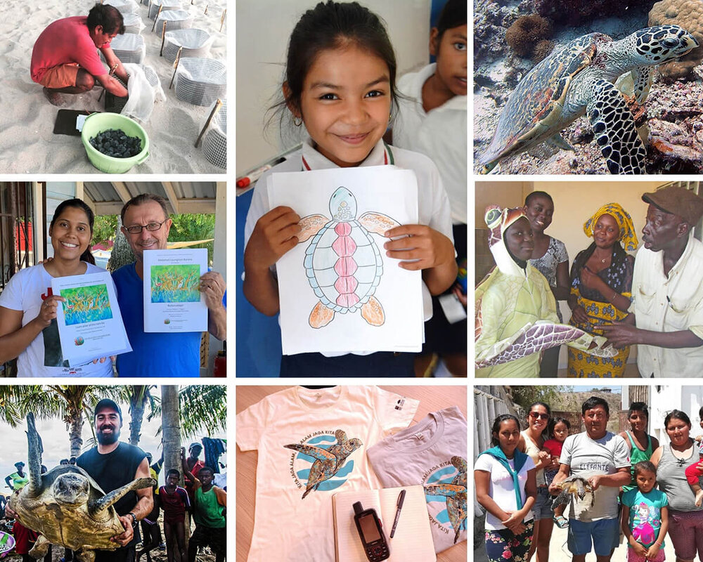

We're a nonprofit organization that protects sea turtles through conservation travel and volunteer tours,
And help save sea turtle hatchlings on important nesting beaches around Sri Lanka, work with the tourism industry to end the turtleshell trade, and get plastic out of sea turtle habitats
Our programs provide funding, resources,and tools to protect endangered sea turtle species in Sri Lanka.

Our Vision
The CTI Program’s vision is to create a global network of specialists working to accelerate the conservation of sea turtles and their habitats, pooling and synthesizing data, and regularly sharing the information with audiences who can make a difference.
Our Mission
Feeding the network
Collecting and synthesizing collective resources to develop a dense and dynamic network of people to achieve CTI's success, preserving databases and maps of everything CTI produces, CTI data, expertise and creativity, dedicated to building CTI projects across regions and countries is there Our hope is to be a transparent and trusted network that works to identify and create opportunities for collaboration